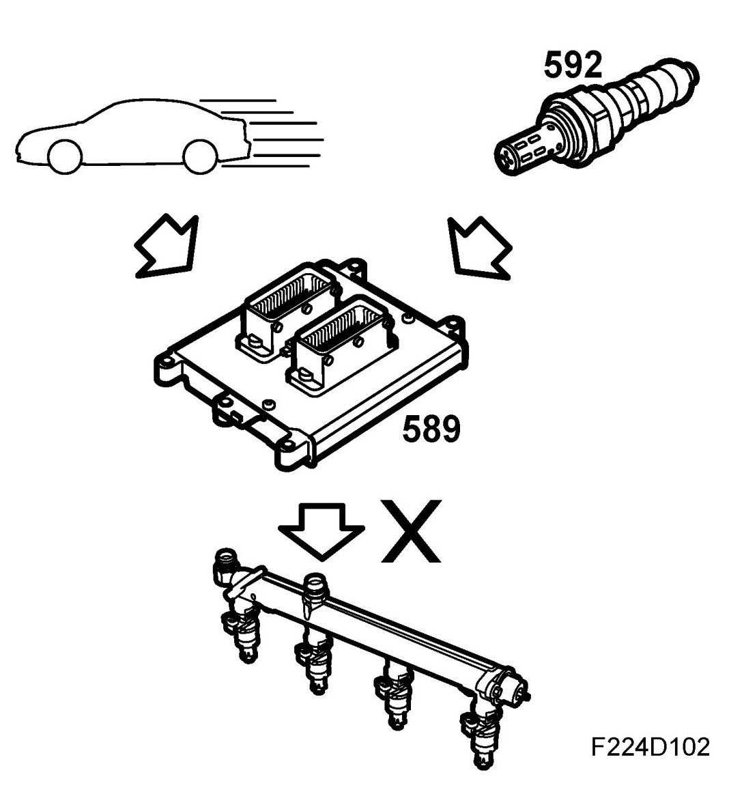
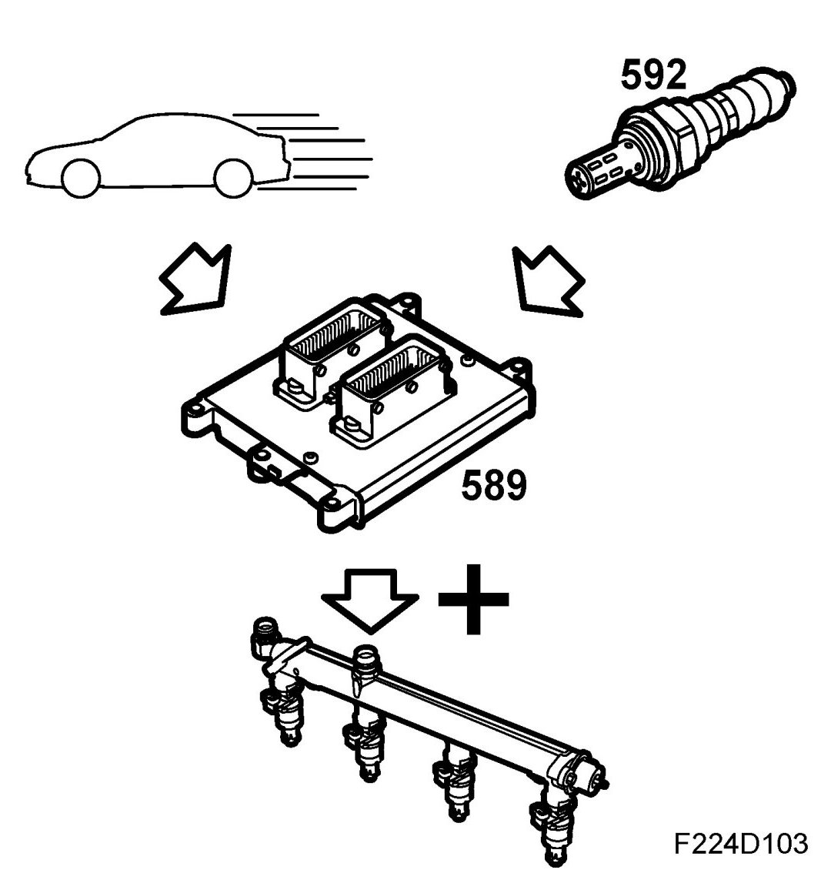
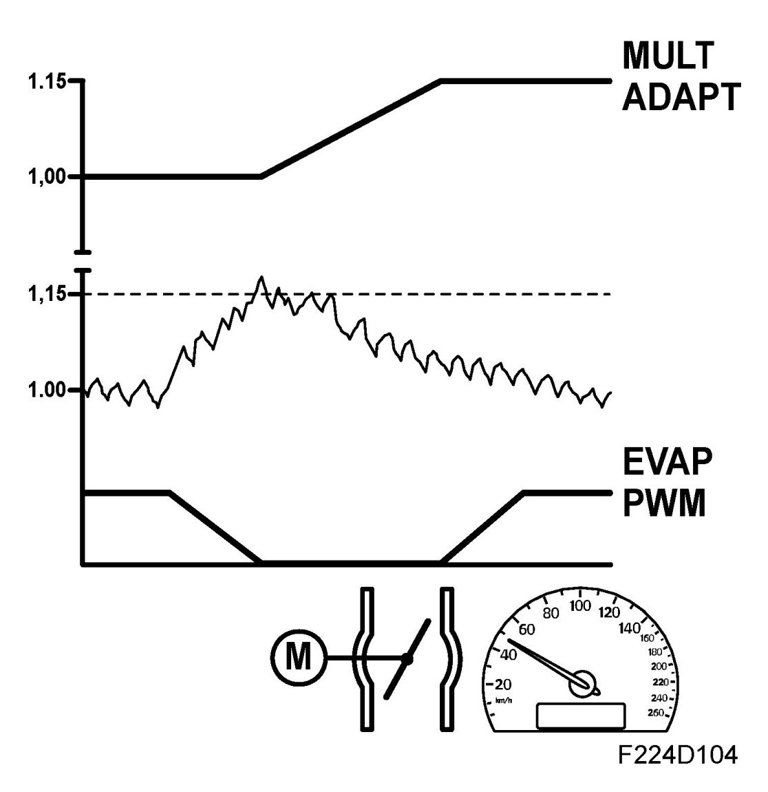
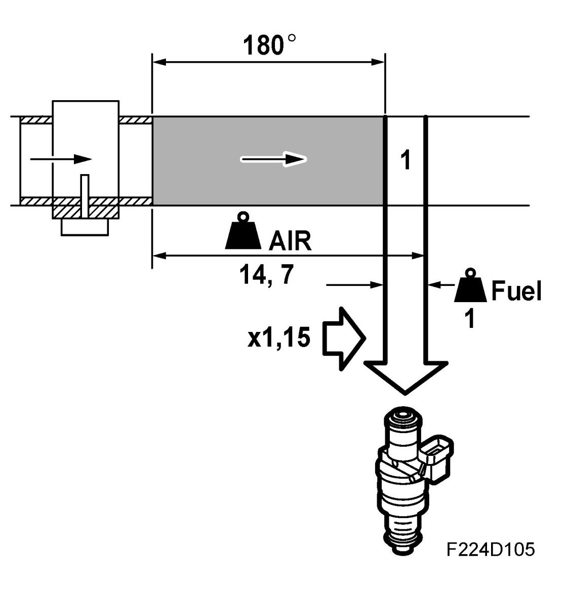
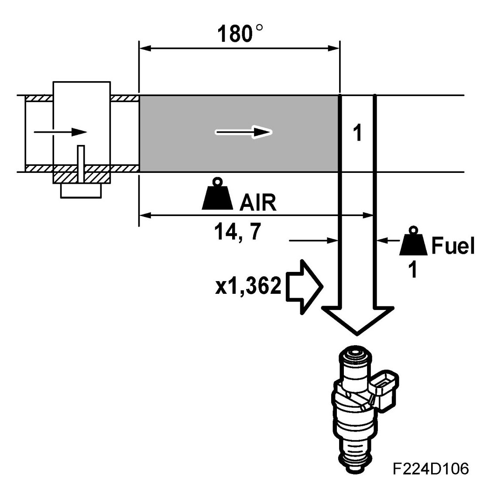
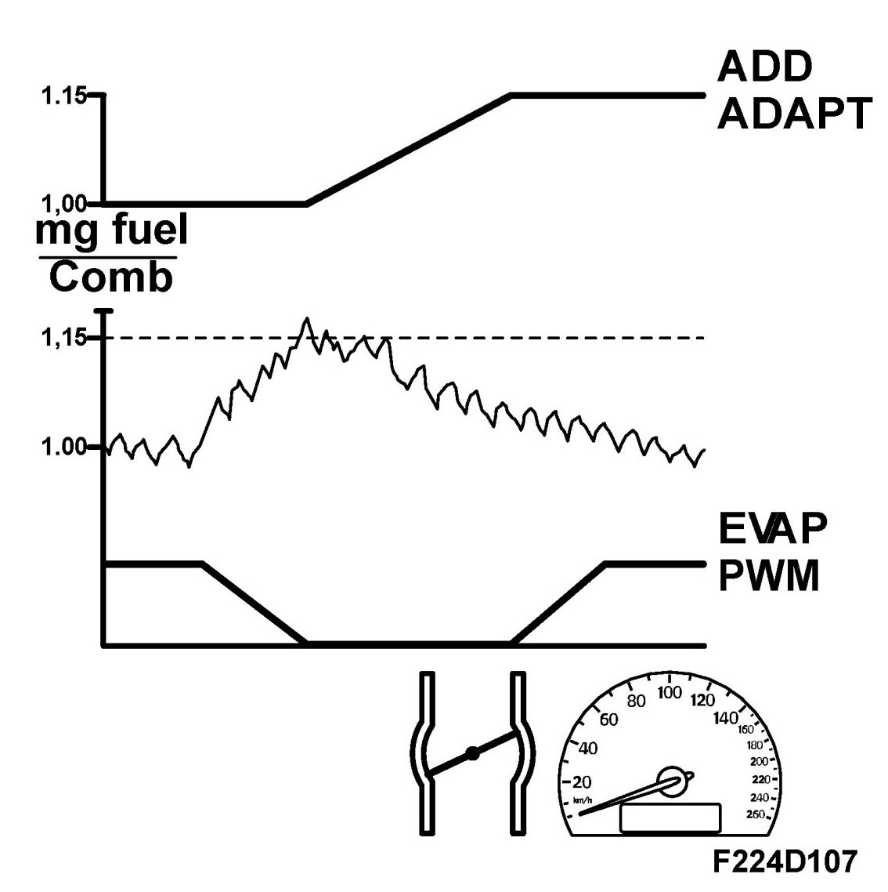

Fuel Adaptation
Fuel Adaptation
Fuel adaptation, general
The objective of fuel adaptation is to compensate for normal production tolerances, ageing and minor deviations in fuel/air ratio in case of a system fault.


The function is divided into two parts, multiplicative adaptation that takes place under partial load and additive adaptation that takes place at idling speed.
Together, these adaptation will make closed loop work with a correction factor of around 1.00.
Multiplicative adaptation
If closed loop continuously corrects a deviation in the fuel system, it will be adapted. Adaptation occurs every 5 minutes and takes 30 seconds.


The fuel quantity is always multiplied by a multiplicative adaptation factor of 1.00 when the control module is new or has been disconnected. Multiplicative adaptation takes place under conditions of partial load. Purging is stopped during adaptation because other factors that can affect the fuel must not be active.
The entire closed loop deviation from 1.00 is transferred to the multiplicative adaptation factor. This means that the correct fuel quantity will be injected even when closed loop is inactive, e.g. when cold starting or driving under full load. A multiplicative adaptation must always take place before an additive after starting the engine. Limits for multiplicative adaptation are 0.75 and 1.25 respectively.
The following conditions must be fulfilled for multiplicative adaptation to take place:
- Closed loop active.
- No purging in progress; this takes place for 4 minutes and 30 seconds during each 5-minute period. However, a multiplicative adaptation will take place directly the first time the other conditions have been fulfilled.
- Engine coolant temperature exceeds 76 degrees C.
- Engine speed 1500-2750 rpm.
- Engine load 175-350 mg/c.
If closed loop continuously corrects a deviation in the fuel system, it will be adapted. Adaptation occurs every 5 minutes and takes 30 seconds.
The fuel quantity is always multiplied by a multiplicative adaptation factor of 1.00 when the control module is new or has been disconnected. Multiplicative adaptation takes place under conditions of partial load. Purging is stopped during adaptation because other factors that can affect the fuel must not be active.
The entire closed loop deviation from 1.00 is transferred to the multiplicative adaptation factor. This means that the correct fuel quantity will be injected even when closed loop is inactive, e.g. when cold starting or driving under full load. A multiplicative adaptation must always take place before an additive after starting the engine. Limits for multiplicative adaptation are 0.75 and 1.25 respectively.
The following conditions must be fulfilled for multiplicative adaptation to take place:
- Closed loop active.
- No purging in progress; this takes place for 4 minutes and 30 seconds during each 5-minute period. However, a multiplicative adaptation will take place directly the first time the other conditions have been fulfilled.
- Engine coolant temperature exceeds 75 degrees C.
- Engine speed 1500-2750 rpm.
- Engine load 175-350 mg/c.
Additive adaptation
If closed loop continuously corrects a deviation in the fuel system, it will be adapted. Adaptation occurs every 5 minutes and takes 30 seconds. The additive adaptation, which is 0.000 mg fuel/combustion when the control module is new or has been disconnected, is always added to the fuel quantity. The additive adaptation takes place at idling speed. Purging is stopped during adaptation because other factors that can affect the fuel must not be active.


The fuel quantity is added or subtracted until closed loop fluctuates around 1.00 (0%). Additive adaptation is required because air leaks at idling speed will lead to a greater fault that must not be adapted multiplicatively as the fuel quantity would then be far too great when the load was increased.
The limits for the additive adaptation are minus 4 and 4 mg fuel/combustion respectively.
A multiplicative adaptation must always take place before an additive after starting the engine.
The following conditions must be fulfilled for additive adaptation to take place:
- Closed loop active.
- No purging may occur; this takes place for 4 minutes and 30 seconds every 5- minute period.
- Engine coolant temperature exceeds 76 degrees C.
- Engine speed 750-950 rpm.
- Engine load 85-230 mg/c.
- Car stationary.